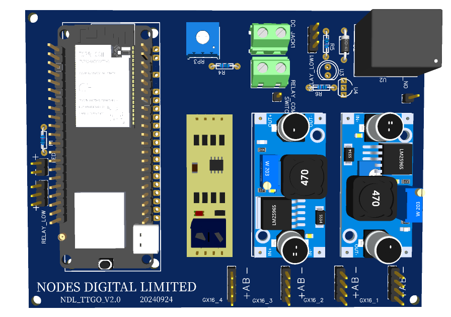
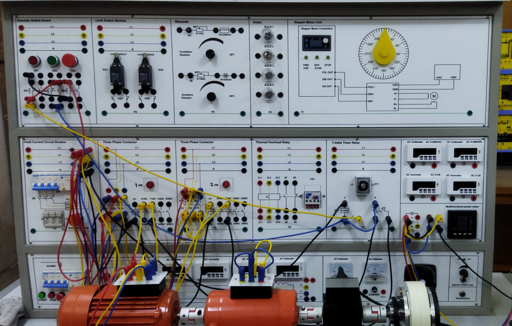

Specializing in firmware & hardware development, PCB & schematic design, IoT protocols and cloud platforms
About Me
I'm an IoT Engineer with over 3 years of experience, currently working at Nodes Digital Limited, focusing on solar energy-based precision agriculture and e-fisheries monitoring solutions.
Projects
-
Precision Agriculture Monitoring System
This project integrates RS485 sensors with GPRS technology to provide real-time data on soil moisture, temperature, and humidity for efficient precision agriculture. It ensures the optimal use of resources like water and fertilizer.
-
Remote Firmware Updates via GPRS
Developed a secure Over-The-Air (OTA) firmware update system using GPRS connectivity, enabling remote updates to devices without needing physical access. This is ideal for deployed IoT systems in remote locations.